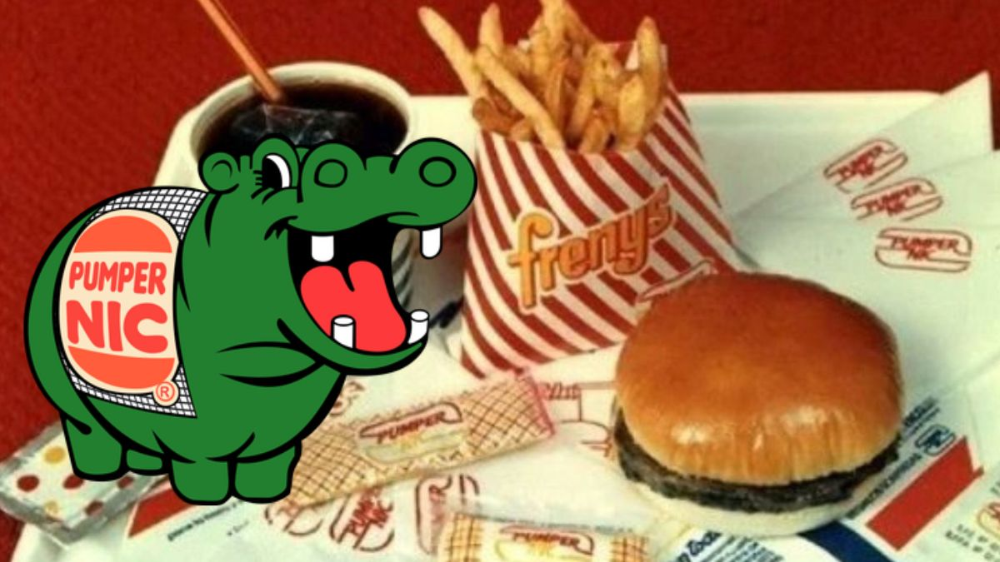

Pumper Burger
La hamburguesa original que marcó una época. Pan suave, carne jugosa y ese aderezo único.
Después de décadas, Pumper Nic regresa con el mismo espíritu argentino y el sabor que nunca se olvidó.

La hamburguesa original que marcó una época. Pan suave, carne jugosa y ese aderezo único.
Pumper Burger + Papas + Gaseosa. Una experiencia completa como en los viejos tiempos.
Dos medallones, doble queso y toda la nostalgia servida en un solo plato.
⭐⭐⭐⭐⭐
"Volví a probar la Pumper Burger y me transporté a los 80. ¡Gracias por volver!"
- Marcelo, Buenos Aires⭐⭐⭐⭐
"El sabor es igual al de antes, pero con un toque moderno. Mis hijos lo aman."
- Andrea, Rosario⭐⭐⭐⭐⭐
"Esto no es una hamburguesa, es una cápsula del tiempo."
- Fede, Córdoba¿Querés abrir tu propio local o dejarnos tu mensaje?